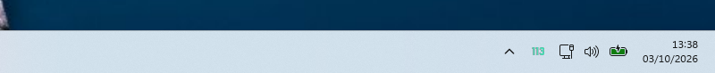
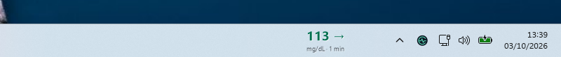
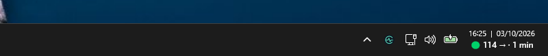

GLUCOSE NEXT TO THE CLOCK
Your glucose in the
Windows taskbar.
Choose a discreet tray value, a large reading or glucose inside the clock. Combine the views that suit you.
GlucoTick is a desktop app, not a native Windows Widgets panel widget. It reads shared LibreLinkUp data. Set up the receiving account.
| View | Windows | Windhawk | Display |
|---|---|---|---|
| System tray | 10 / 11 x64 | No | Value or icon next to the clock |
| Large number | 10 / 11 x64 | No | Value, arrow, unit and age |
| Integrated clock | 11 x64 | Yes, validated combination | Reading inside the clock itself |
| Panel | 10 / 11 x64 | No | Reading and session graph |
1. System tray glucose
Open Ajustes → Visualización and choose the glucose value for the tray icon. You can keep the logo if another view shows your reading. Click to open the panel or right-click for the menu.

2. A large number over the taskbar
Enable the large number in Visualización. Adjust its size, width, position and monitor to avoid covering controls you use. The background is transparent, with a trend arrow, unit and reading age. Windhawk is not needed.

3. Glucose inside the Windows 11 clock
Open Ajustes → Visualización → Configurar el reloj de Windows. The wizard prepares the optional Windhawk integration on Windows 11 x64. First setup may need up to 313 MiB of downloads, 4 GB of free space and administrator permission.

The wizard can configure, repair or disable the integration. If Windhawk mods are paused, resume them in Windhawk. Unvalidated versions are preserved without automatic downgrades. Clock troubleshooting.
4. Open the panel for more detail
The panel shows the value, trend, measurement time, reading age and readings received over the last three hours of the current session. It does not download full sensor history.
Why is the reading grey?
After more than five minutes from measurement, the last value turns grey in every view. Fetching the same reading does not make it new. Check the connection and reading age.
Download GlucoTick ↓ · Watch the demo
Real GlucoTick 0.8.7 screenshots with fictional data. Reviewed for 0.8.10 on 8 October 2026. The Windows app is currently in Spanish.